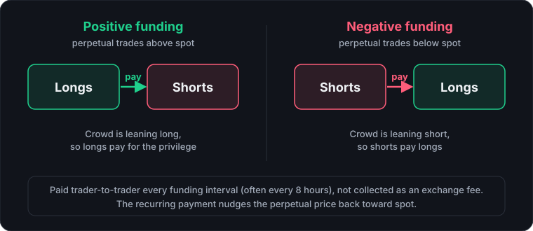

Open any perpetual futures contract and there's a small percentage sitting next to the price, updating every few hours. Most traders glance past it. It's worth slowing down on, because the funding rate is one of the few numbers on the screen that tells you what other traders are actually positioned for, not just where price has been.
What it's actually for
Perpetual futures never expire, which is what makes them convenient — and also what creates a problem: with no expiry date to force the contract price back to the real spot price, the two can drift apart indefinitely. The funding rate is the fix. It's a periodic payment exchanged directly between long and short traders, sized so that staying on the more crowded side of the trade becomes slightly costly. That constant pressure is what keeps the perpetual's price anchored near spot without anyone needing to settle the contract.

Reading positive vs. negative
- Positive funding: longs pay shorts. This usually means more traders are positioned long than short — demand for upside exposure is outrunning the other side of the trade, and the market is paying a premium to hold it.
- Negative funding: shorts pay longs. Short positioning is crowded relative to long positioning, often during a fast selloff or heavy hedging activity.
Neither direction is inherently bullish or bearish on its own. A modest positive rate during a steady uptrend is normal, unremarkable positioning. A sharply positive rate that keeps climbing, especially alongside rising open interest, is a different signal — it means leveraged long positioning is getting crowded, and crowded positioning is exactly what fast liquidation cascades are made of.
A worked example: what funding actually costs
The part beginners miss is that funding is charged on the full position size, not on your margin. At 10x leverage, that $10,000 position is backed by about $1,000 of margin, so the same $1 payment is 0.1% of your own capital every period, and the year-long $1,095 would exceed your entire margin. That is the pressure working as designed: staying on the crowded side of a leveraged trade gets expensive if you stay long enough. If you hold a long while funding is negative, the direction flips and you receive the payment instead.
Why it matters more paired with open interest
Funding rate alone tells you the direction of the crowd. Open interest tells you the size of it. A high funding rate with flat or falling open interest often just means a small, stubborn group of traders is paying up to stay positioned — not much fuel for a violent move either way. The same funding rate with open interest climbing fast is a more crowded, more fragile setup: more leveraged positions sitting on one side, more that would need to unwind if price turns against them. CryptoBolt's terminal surfaces both side by side for exactly this reason — funding rate by itself is a data point, funding rate next to open interest starts to look like a read on positioning risk.
What counts as a "good" or normal funding rate?
There's no fixed threshold, but as a rough anchor: funding in the roughly 0.01%–0.02% range per 8-hour period (roughly 11–22% annualized if it never changed) is typical, unremarkable positioning on most major pairs. Rates that push toward 0.05%–0.1% per period (well over 50% annualized), especially while climbing, mean the crowd is leaning hard on one side and paying a real premium to stay there — that's the range where leveraged positioning starts getting fragile. If you're holding a leveraged position while funding runs against you, remember that funding is a running cost that eats into your margin over time, on top of — not instead of — your liquidation price, which is set mainly by leverage and entry price, not by funding. (You can test this with the liquidation price calculator.) CryptoBolt's terminal shows estimated liquidation price alongside live funding for exactly this reason: they're two separate risks that both need watching.
The catch
Funding settles on a fixed schedule, every eight hours on many venues (some contracts use shorter intervals), so a single reading is a snapshot, not a trend. What's more useful is watching how it moves over the funding periods leading into a big move: rate climbing steadily into a rally, then spiking right before it stalls, is a very different picture than a rate that's been calm the whole way up. Treat it the same way you'd treat the Fear & Greed index or round-number levels — informative in isolation, more useful stacked with price action, volume, and open interest than read alone.
Where to go next
- Spot vs. perpetual futures: how leverage and liquidation work alongside funding.
- Liquidation price calculator: see how leverage moves your liquidation price.
- Reading the Fear & Greed index: another crowd-positioning signal, from sentiment instead of derivatives.
- Glossary: plain-English definitions for every term used here.
See live funding rates next to open interest in the terminal →